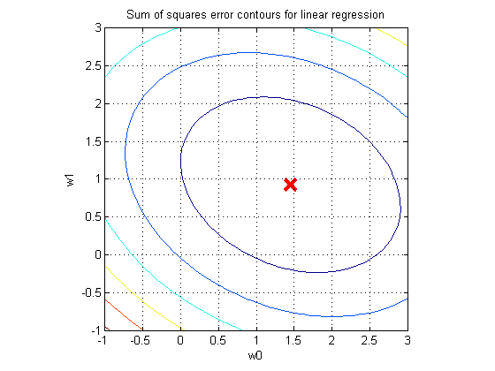
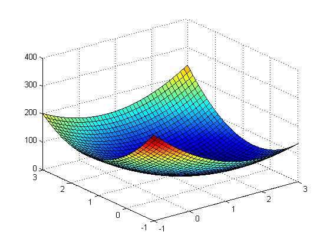

setSeed(2);
n = 20;
x = randn(n,1);
wtrue = [1 1];
sigma = 1;
y = wtrue(1) + wtrue(2)*x + sigma*randn(n,1);
X = [ones(n,1),x];
w = X\y
v = -1:.1:3;
nv = length(v);
[w0,w1] = meshgrid(v);
w0=w0(:)';
w1=w1(:)';
m = length(w0);
SS = sum(((ones(n,1)*w0 + x*w1) - repmat(y,1,m)).^2,1);
SS = reshape(SS,nv,nv);
figure
contour(v,v,SS)
hold on
plot(w(1),w(2),'rx', 'markersize', 14, 'linewidth', 3)
hold off
title 'Sum of squares error contours for linear regression'
axis equal
axis square
grid on
xlabel('w0')
ylabel('w1')
printPmtkFigure('linRegContoursSSE');
figure;
surf(v,v,SS)
printPmtkFigure('linregSurfSSE')
w =
1.4530
0.9278
 